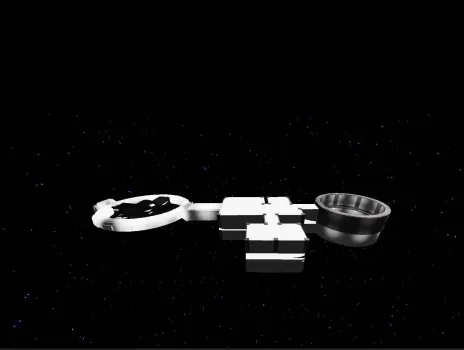

🧠About Nylex Tech
Nylex Tech is a forward-thinking technology company dedicated to building innovative tools, models, and solutions that empower both developers and non-developers alike.
From advanced models to user-friendly builds and utilities, our mission is simple: make technology accessible, efficient, and powerful for everyone. Whether you're coding a new platform or just getting started, Nylex Tech provides the tools you need to move faster, work smarter, and innovate with confidence.

The spaceship is not a kind of spaceship you can drive but more like a SciFi spaceship kind of map. It can be used as a map—it is a really big map and really nice.
Channel the power of water with this mystical staff featuring a glowing aqua crystal embedded in ancient driftwood. Perfect for water mages and elemental warriors, it includes a smooth M1 attack animation and epic water-themed VFX—complete with splash effects, shimmering trails, and a pulsing blue glow.